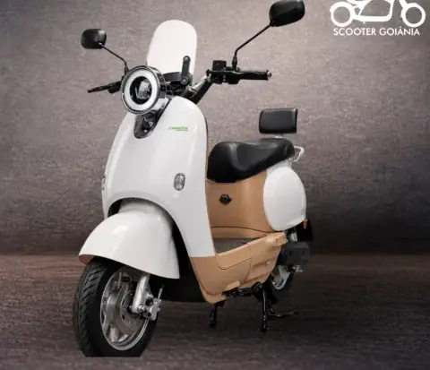
Scooter elétricaC12
R$ 10.900
- Potência1000W
- Autonomia50 km
- Velocidade32 km/h
- Suporta150 kg
- BateriaLítio
- Garantia90 dias
✓ Suporte pós-venda e oficina especializada
Quero saber mais sobre o modelo C12
Scooter Goiânia
Modelos para diferentes rotinas, com garantia, oficina especializada e suporte da Scooter Goiânia também depois da compra.
Scooters elétricas em Goiânia
Compare opções para trajetos mais curtos ou para quem precisa rodar mais entre uma recarga e outra.

Scooter elétrica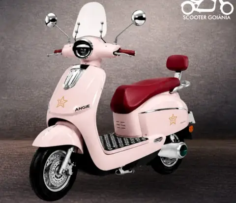
Scooter elétrica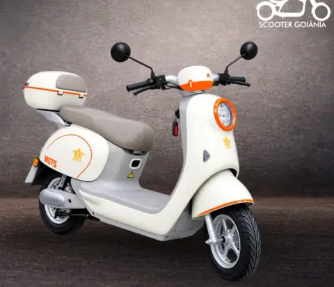
Scooter elétrica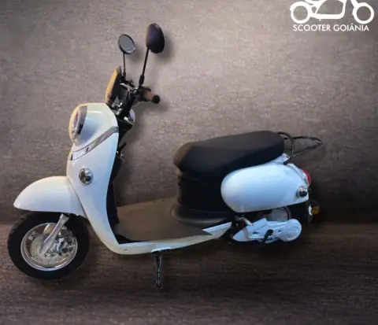
Scooter elétrica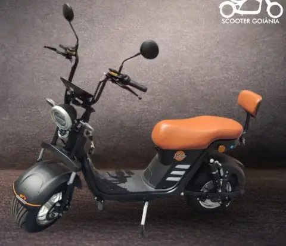
Scooter elétrica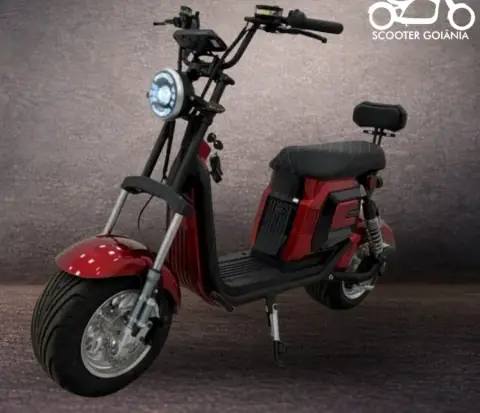
Scooter elétrica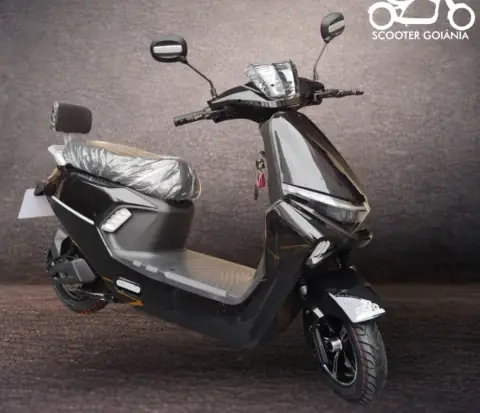
Scooter elétricaPreços e disponibilidade conforme o catálogo vigente. Consulte a equipe antes de fechar a compra.
Scooters com pedal
Modelos compactos com pedal, banco e configurações variadas de bateria e autonomia.
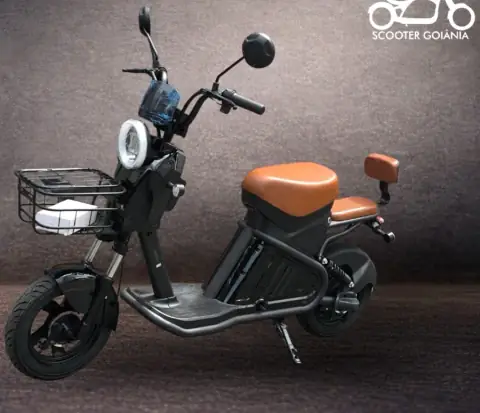
Scooter com pedal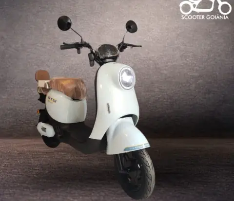
Scooter com pedal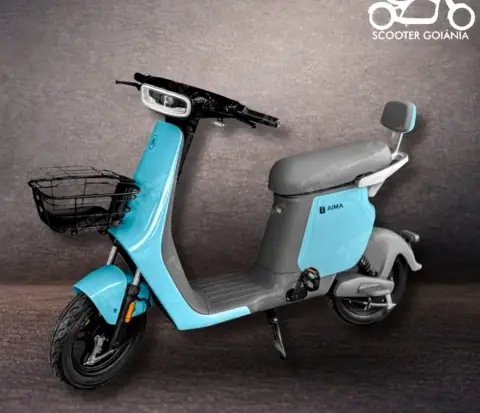
Scooter com pedal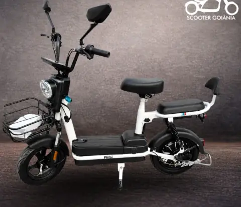
Scooter com pedal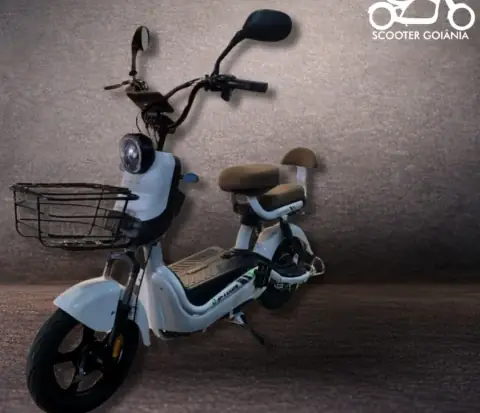
Scooter com pedal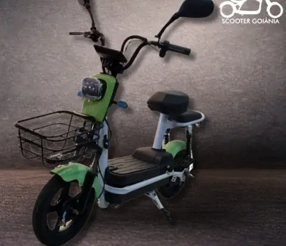
Scooter com pedal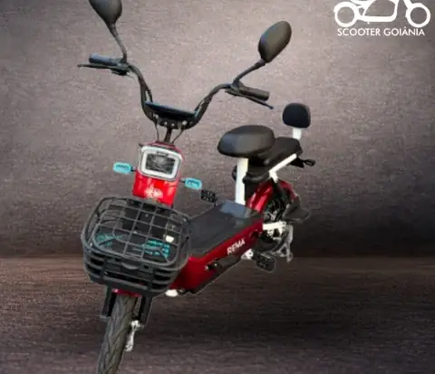
Scooter com pedal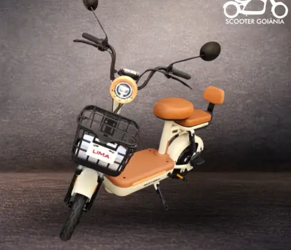
Scooter com pedal* No modelo Ibiza, o prazo varia por componente: motor (1 ano), módulo e bateria (6 meses) e peças mecânicas (3 meses).
Bikes elétricas em Goiânia
Modelos com diferentes níveis de potência e autonomia para quem quer usar a bike em deslocamentos, passeios ou na rotina diária.
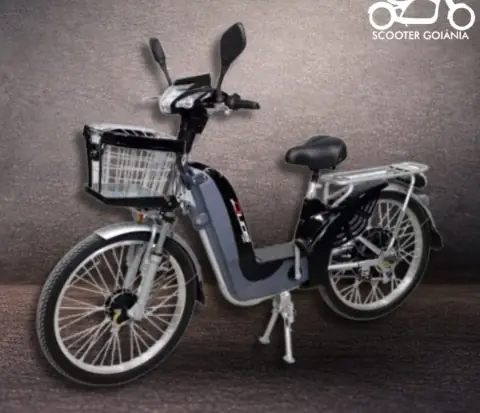
Bike elétrica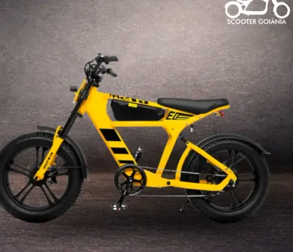
Bike elétrica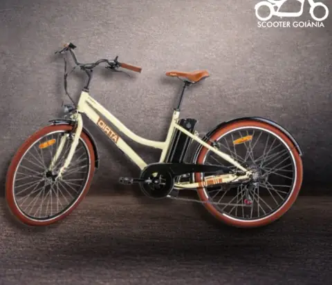
Bike elétrica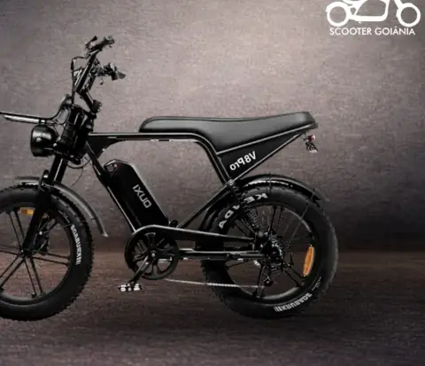
Bike elétrica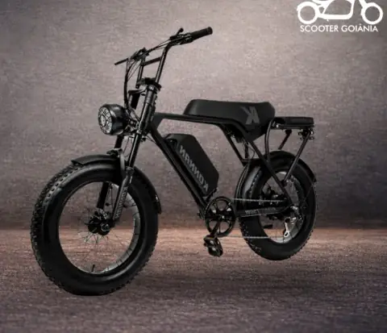
Bike elétrica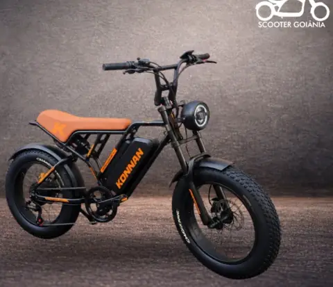
Bike elétrica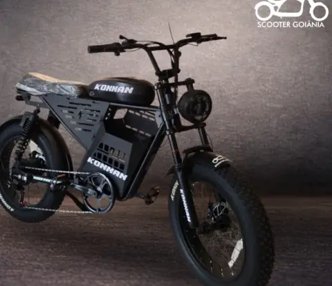
Bike elétrica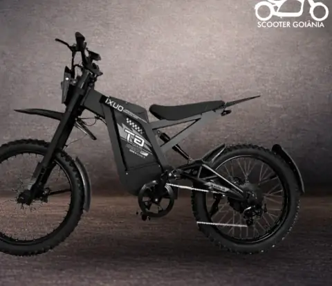
Bike elétricaCaracterísticas informadas no catálogo da Scooter Goiânia. Imagens ilustrativas do próprio catálogo.
Encontre o modelo para o seu uso
A Scooter Goiânia trabalha com scooters e bikes elétricas em diferentes configurações, tamanhos e faixas de preço. Se você ainda não sabe qual escolher, a equipe pode ajudar a comparar os modelos de acordo com a sua rotina.
Garantia, oficina e manutenção
Na Scooter Goiânia, o atendimento não termina quando o produto sai da loja. Antes da compra, a equipe orienta sobre as condições de garantia do modelo escolhido. Depois, se a scooter ou bike precisar de revisão, manutenção ou apresentar algum problema, o cliente conta com a oficina exclusiva e especializada da Scooter Goiânia.
Avaliação do veículo quando algo não estiver funcionando como deveria e manutenção para acompanhar o uso.
Suporte em casos de falha, perda de desempenho ou alteração no funcionamento e na autonomia.
Ajustes, manutenção e orientação sobre garantia quando houver dúvida sobre cobertura ou atendimento.
Dúvidas comuns
No catálogo atual, as scooters elétricas custam de R$ 10.500 (X13) a R$ 11.700 (WD6), as scooters com pedal vão de R$ 5.000 (Smart) a R$ 9.900 (Ibiza) e as bikes elétricas, de R$ 4.900 (Miami) a R$ 13.500 (GT-2000). Confirme valores e disponibilidade com a equipe.
Entre as bikes do catálogo atual, a GT-2000 informa até 60 km. Entre as scooters elétricas, Beverly e Liberty também chegam a até 60 km.
Sim. O catálogo possui modelos com bateria de lítio e outros com bateria de chumbo.
Sim. Informe como pretende usar o produto e a equipe pode ajudar na comparação.
Sim. A cobertura varia conforme o produto.
Sim. A Scooter Goiânia possui oficina especializada e suporte pós-venda.
Na Scooter Goiânia, com lojas no Setor Oeste (Av. T-7, 310), no Buriti Shopping, em Aparecida de Goiânia, e no AlphaMall. Também é possível tirar dúvidas pelo WhatsApp antes de visitar.
Ainda ficou com dúvida?
Conte como pretende usar sua scooter ou bike elétrica e compare as opções disponíveis. Tire dúvidas sobre modelos, disponibilidade, garantia ou assistência.